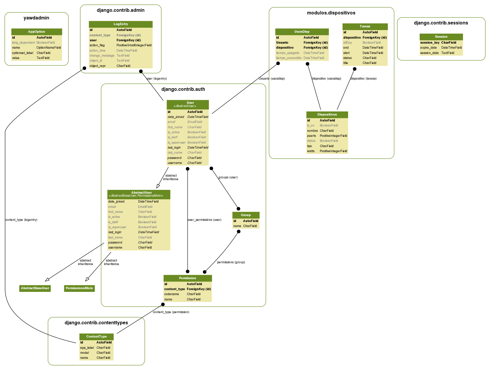
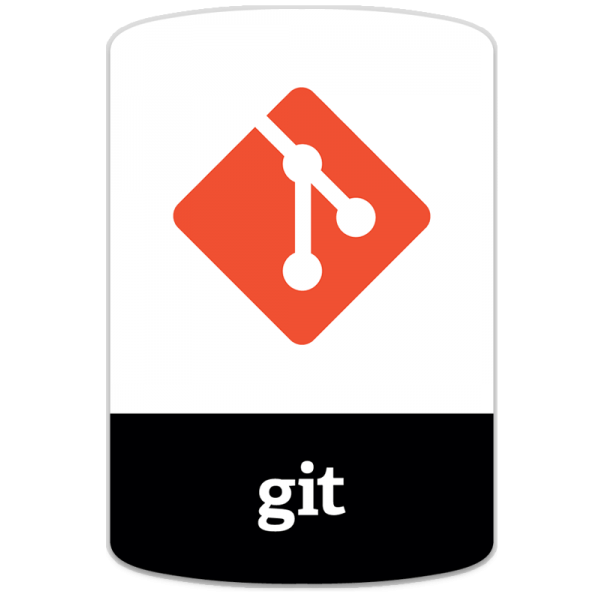
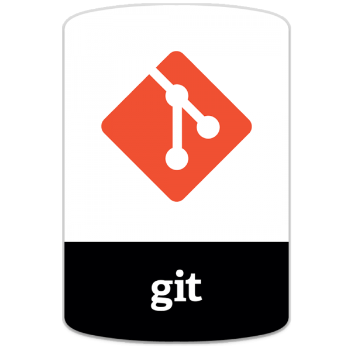
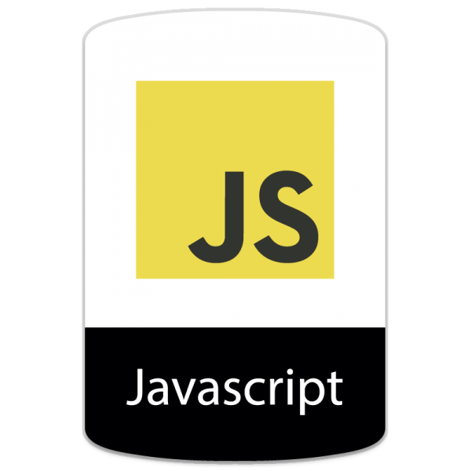
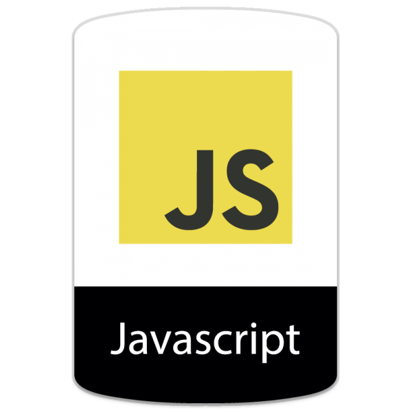

Your browser doesn't support the features required by impress.js, so you are presented with a simplified version of this presentation.
For the best experience please use the latest Chrome, Safari or Firefox browser.
Repúblca Bolivariana de Venezuela
Ministerio del Poder Popular Para la Educación Superior Universitaria
Universidad Nacional Experimental de los Llanos Centrales "Rómulo Gallegos"
Área de Ingeniería en Sistemas
Programa de Ingeniería en Informática
San Juan de los Morros - Estado Guarico
Aplicación Para el Control de Circuitos Eléctricos Mediante Arduino Caso: Direccion de Informatica de la Universidad Nacional Experimental "Romulo Gallegos"
AUTOR:
Marcos Antonio Castellanos Caraballo
TUTOR ACADÉMICO
Ing. Dehivis Perez
TUTOR METODOLÓGICO
Ing. Soleidys Peña
Planteamiento del Problema
Lejanía de los equipos al contacto físico de los trabajadores del Departamento de Informática Dentro del mismo entorno laboral
Retraso del tiempo laboral de la empresa
Movimientos de traslado innecesarios
OBJETIVOS DE LA INVESTIGACIÓN
Objetivo General
Implementar aplicación que permita el control total de la electricidad para encender y/o apagar equipos electrónicos que se encuentren dentro de la casa de estudios y hacer funcionamiento de los mismos.
Objetivos Especificos
Diagnosticar el proceso tecnológico eléctrico dentro del DEPARTAMENTO DE INFORMÁTICA DE LA UNIVERSIDAD NACIONAL EXPERIMENTAL “RÓMULO GALLEGOS”
Establecer los requerimientos necesarios suministrados en visitas al área
Diseñar un componente eléctrico que permita el manejo de la electricidad que lo abastece y a su vez alimenta al área.
Desarrollar el componente que permita el manejo de la electricidad desde cualquier parte del mundo mediante acceso remoto
Promover el uso de las tecnologías de vanguardia a nivel mundial, en ambientes laborales de trabajo, para eliminar el miedo ante la migración tecnológica pertinente, e impulsar el buen uso del factor tiempo
Esquema Lógico

Diagrama Proceso Actual gracias a la herramienta tecnológica creada
Gracias
por
la
atencion
prestada!

 


 
